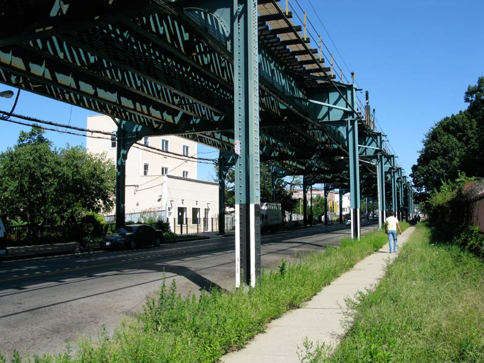

Ozone Park is a neighborhood located in the southwestern section of the borough of Queens, in New York City, New York, United States. It is located next to the Aqueduct Racetrack in South Ozone Park, a popular spot for Thoroughbred racing. The neighborhood was known for its large Italian-American population. Over the years, it has become a very diverse community.
The northern border is Atlantic Avenue; the southern border is South Conduit Avenue, the western border is the Brooklyn/Queens border line; and the eastern border is up to 108th Street and Aqueduct Racetrack. The border with Brooklyn runs mostly along Eldert Lane and 75th and Drew Streets. Different parts of the neighborhood are covered by Queens Community Board 9 and 10, as well as by New York City Police Department's 102nd and 106th Precincts. Ozone Park is represented by 3 civic organizations. Our Neighbors Civic Association of ozone Park, INC, Ozone Park Residents Block Association, INC (OZPKRBA) Ozone Tudor Civic Association, INC.
To the east is 108th Street and South Richmond Hill and South Ozone Park. (Yes, South Ozone Park isn't south of Ozone Park.) The boundary to the south is South Conduit Avenue and the Lindenwood section of Howard Beach. To the west is the Brooklyn neighborhood of City Line, along with Ruby and Drew Streets. To the north is Atlantic Avenue. Due north is Woodhaven and to the northeast is Richmond Hill.
Events like the construction of factories, houses, churches and transportation systems changed the entire landscape of the neighborhood. These events, specially the development of the Fulton Street Line, made the population of the neighborhood grow. Nowdays the expansion of Ozone Park also includes Tudor village.
In the 21st century, the name "Ozone Park" doesn't ring like it used to. With climate change and concerns about the earth's ozone layer occupying the global headlines, it's hard to imagine a neighborhood named for ozone. When the area was developed in the 1880s, the name "Ozone Park" was selected to lure residents with the thoughts of ocean breezes. Ozone meant pure air, not sullied air. At the time, the area was considered the countryside, compared to Manhattan and Brooklyn. A LIRR station (long gone) helped attract residents.